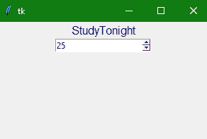

Tkinter Spinbox小部件
在本教程中，我们将介绍 Python 中的 Tkinter Spinbox 小部件及其语法和几个示例。Python 中 Tkinter 的 Spinbox 小部件用于从指定的给定值范围中选择一个值。
它与Tkinter Scale widget(Scale widget 更时尚)在风格上有所不同，但或多或少实现了相同的目的。
例如，当您希望有一个数值下拉列表，如出生年份(从 1950 年到 2020 年)或一个下拉列表供用户选择他们的年龄时，我们可以使用 Tkinter Spinbox 小部件。
当我们希望用户输入一个特定范围内的数值时，这个小部件是条目小部件的替代。
该小部件仅在用户需要从给定的选择范围中进行选择的情况下使用。
Tkinter Spinbox 小部件
自旋盒小部件的语法如下:
w = Spinbox(master, option=value)
在上面的语法中，master参数表示父窗口。您可以使用许多选项来配置您的 spinbox 小部件，这些选项被写成逗号分隔的键值对。
Tkinter Spinbox 小部件选项:
以下是 Tkinter Spinbox 小部件使用的各种选项:
| 选项名称 | 描述 |
|---|---|
bg |
该选项用于小部件的背景颜色。 |
bd |
该选项用于小部件的边框宽度 |
command |
该选项用于指示小部件的关联功能，每次小部件状态改变时都会调用该功能。 |
cursor |
借助该选项，您的鼠标指针类型可以更改为分配给该选项的光标类型。 |
activebackground |
该选项表示微件在焦点下时的背景色 |
disabledbackground |
当禁用时，该选项用于指示小部件的背景颜色。 |
disabledforeground |
此选项用于指示小部件禁用时的前景色。 |
font |
该选项指定小部件内文本的字体类型。 |
fg |
该选项指定小部件的前景色。 |
format |
该选项主要用于格式字符串。此选项没有默认值。 |
from_ |
该选项用于指示小部件的起始范围 |
justify |
该选项指定标签中多条线的对齐。默认值为左。其他值为右和中。 |
relief |
该选项表示边框的类型。该选项的默认值为下沉。 |
state |
该选项用于表示小部件的状态。该选项的默认值为正常。其他值有“禁用”、“只读”等。 |
validate |
该选项用于控制如何验证小部件的值 |
to |
该选项代表小部件值的最大限值。另一个值由来自 _ 选项的指定 |
repeatdelay |
该选项主要用于控制自动重复按钮。这里的值以毫秒为单位。 |
repeatinterval |
该选项类似于重复延时选项。这里的值也是以毫秒为单位给出的。 |
validatecommand |
该选项与函数回调的相关联，该函数用于对小部件的内容进行验证。 |
xscrollcommand |
该选项主要与滚动条小部件的set()方法一起使用，使该小部件可水平滚动 |
wrap |
该选项主要用于收拢旋转盒的上下按钮 |
width |
该选项指示小部件的宽度。 |
vcmd |
该选项类似于 validatecommand 。 |
values |
该选项表示包含部件的值的元组** |
textvariable |
它是一个控制变量，用于控制小部件的文本 |
Tkinter Spinbox 小部件方法:
以下是 Tkinter Spinbox 小部件使用的各种方法:
| 方法名称 | 描述 |
|---|---|
invoke(element) |
该方法用于调用与小部件相关联的回调。 |
insert(index,string) |
我们使用这个方法主要是在给定的指定索引处插入字符串 |
index(index) |
要获取给定索引的绝对值，将使用此方法 |
identify(x,y) |
该方法用于识别指定范围内的小部件元素 |
get(startindex, endindex) |
此方法用于获取指定范围内的字符 |
delete(startindex, endindex) |
此方法用于删除指定范围内的字符 |
Tkinter Spinbox Widget 示例
下面我们有一个 Spinbox 小部件的基本例子。让我们看看下面给出的代码片段:
from tkinter import *
win = Tk()
win.geometry("300x200")
w = Label(win, text ='StudyTonight', fg="navyblue",font = "50")
w.pack()
sp = Spinbox(win, from_= 0, to = 50)
sp.pack()
win.mainloop()

在上面的代码中，我们创建了一个简单的应用窗口，有一个标签小部件和一个范围从 0 到 50 的 Spinbox 小部件。
总结:
这就是 TKinter Spinbox 小部件的工作原理。它用于为用户可以选择的指定数值范围创建输入。如果我们有一个定义的数字范围，那么最好使用自旋盒小部件，而不是使用 Tkinter Entry 小部件。